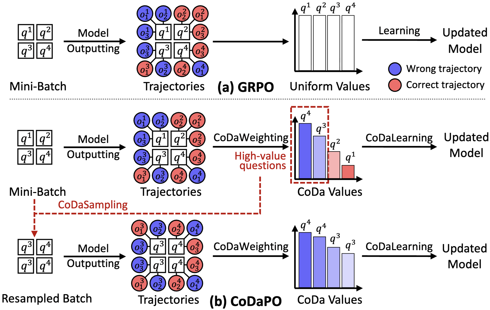
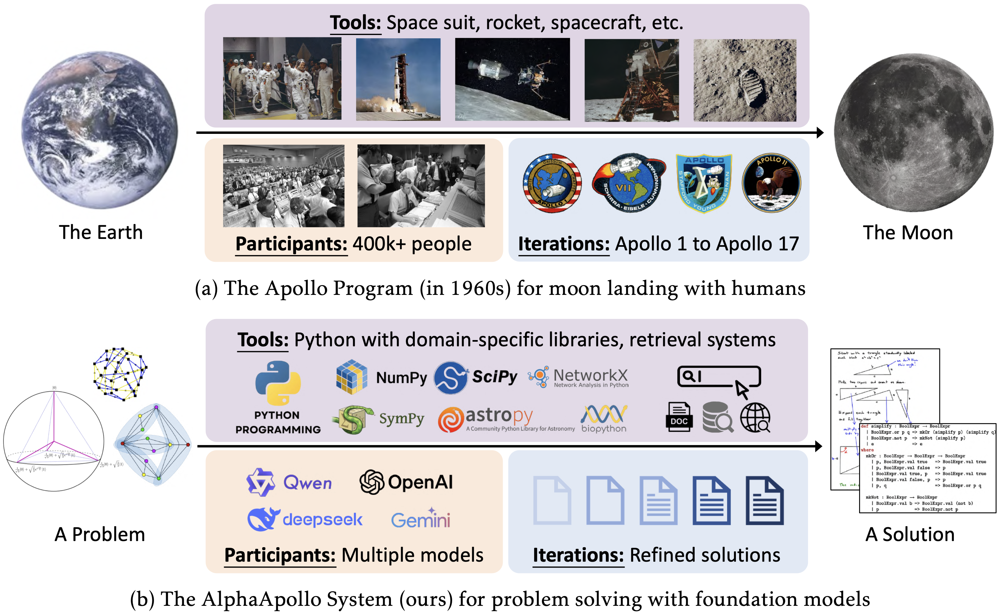
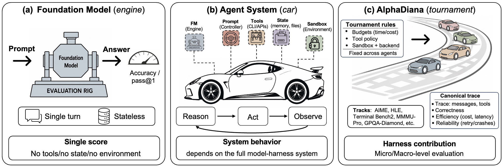

The Easy, the Hard, and the Learnable: Confidence and Difficulty-Adaptive Policy Optimization for LLM Reasoning
Adapting policy updates to confidence and difficulty for more effective reinforcement learning.
I am a PhD student at Hong Kong Baptist University, advised by Prof. Bo Han, and a member of the TMLR group.
My recent work explores reasoning in large language models, including reinforcement learning for reasoning and the development and evaluation of reasoning agents.
Previously, I studied at the University of Copenhagen (2022–2024) and Nankai University (2018–2022).
You can reach me at xiangyulu0129@gmail.com.
Master’s studies in IT & Cognition
Bachelor’s degree in Intelligent Science and Technology

Adapting policy updates to confidence and difficulty for more effective reinforcement learning.

Connecting tool use, multi-turn learning, and verified evolution for complex reasoning.
